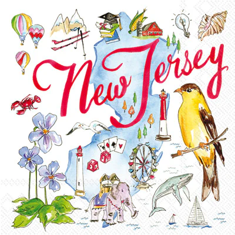

Video Editing
Ive recently have gotten into editing video's, and it has been fun. Editing has been a great way to pass the time.My favorite editing app is Capcut but ive used Alight Motion, After Effects, and VSP.
Ive recently have gotten into editing video's, and it has been fun. Editing has been a great way to pass the time.My favorite editing app is Capcut but ive used Alight Motion, After Effects, and VSP.
Video games is my main hobby, just something i really enjoy doing. Its something ive been doing since i was 7 years old, i have played 100+ games in my lifetime.
I was born in New Jersey but my parents didnt like raising me there so they moved us to georgia. Which now i have lived here for 17 years. Growing up here has been pleasant just wonder how different my life would be if i stayed.But one thing that i know for sure whether im in Georgia or Jersey i have an awesome family will and always impact no matter the location
